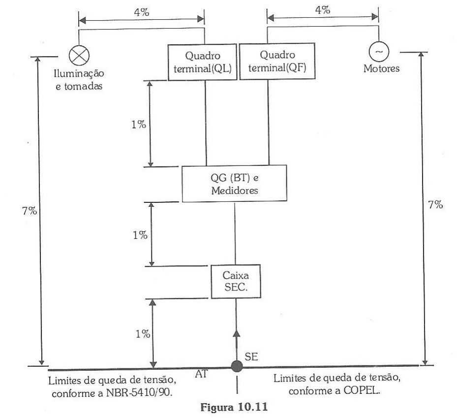

Informe o circuito, o cabo e a forma de instalação. A página calcula a corrente de projeto, aplica os fatores de temperatura e agrupamento da NBR 5410, confere a queda de tensão em corrente alternada ou contínua e indica a seção, o neutro, o condutor de proteção e o eletroduto. O circuito abaixo é um exemplo: troque pelos seus dados.
A NBR 5410 admite 7% da origem da instalação até o ponto de utilização, com 4% a partir do quadro terminal. Use 4% para circuitos terminais. Para alimentadores entre quadros, informe a parcela que sobra do total.

Conte como circuito cada conjunto de condutores carregados que corre junto, incluindo este. Fora das linhas da tabela, a página usa a linha seguinte, a favor da segurança.
O método de instalação escolhido não usa eletroduto de seção circular, então a página não dimensiona o eletroduto.
A seção adotada é a maior entre as exigidas pelos critérios abaixo.